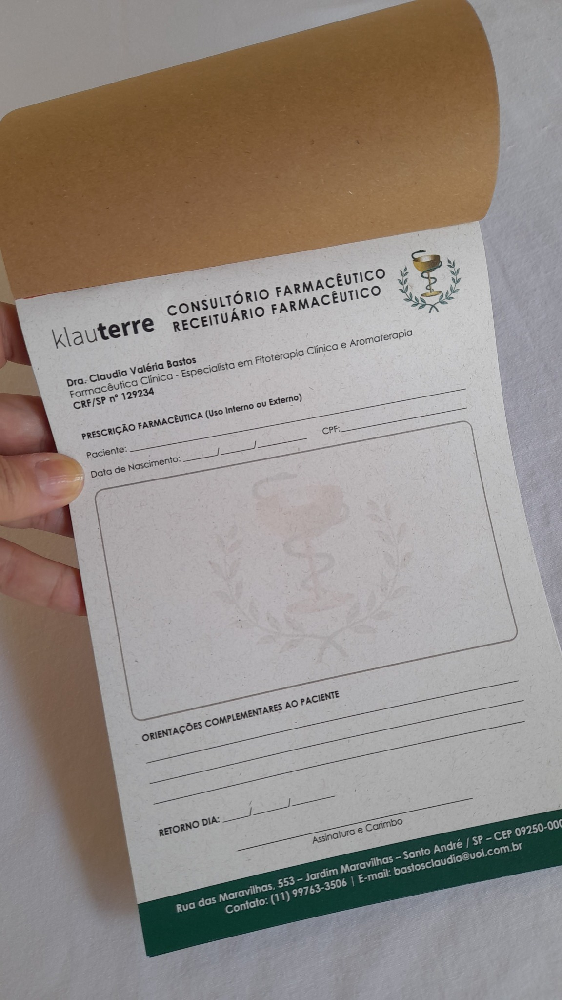

Identidade visual
Logotipo, cores e informações podem ser organizados conforme a comunicação visual do profissional ou consultório.
Produza blocos de receituário personalizados para consultórios e atendimentos farmacêuticos, com identidade visual e organização das informações profissionais de acordo com a arte fornecida ou aprovada.

O receituário personalizado ajuda a manter a apresentação profissional e a identidade visual do atendimento em um material de uso cotidiano.
Logotipo, cores e informações podem ser organizados conforme a comunicação visual do profissional ou consultório.
Material pensado para consultórios e atendimentos farmacêuticos, conforme a necessidade apresentada no pedido.
Formato, material, quantidade e demais características são confirmados antes da produção.
Envie sua arte, referência ou as informações que deseja incluir pelo WhatsApp. Confirmamos formato, material, quantidade, prazo e valor antes da produção.
Envie sua referência, arte ou informações e solicite um orçamento personalizado.